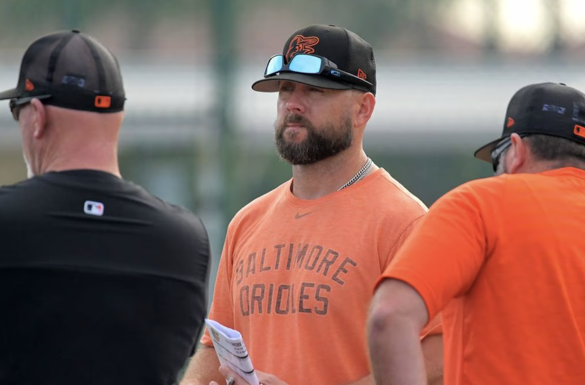
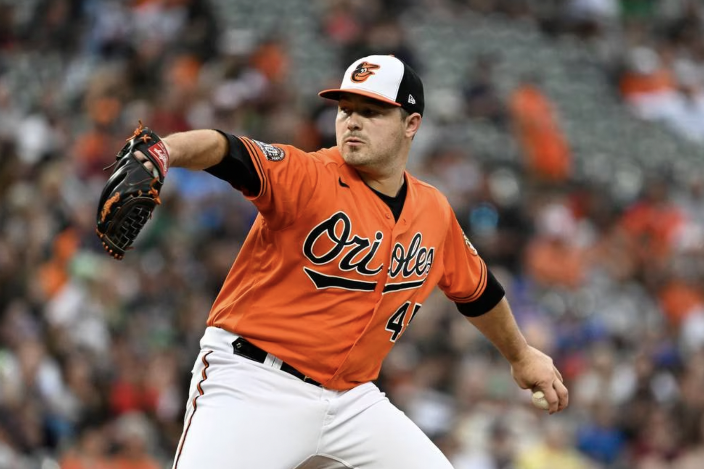
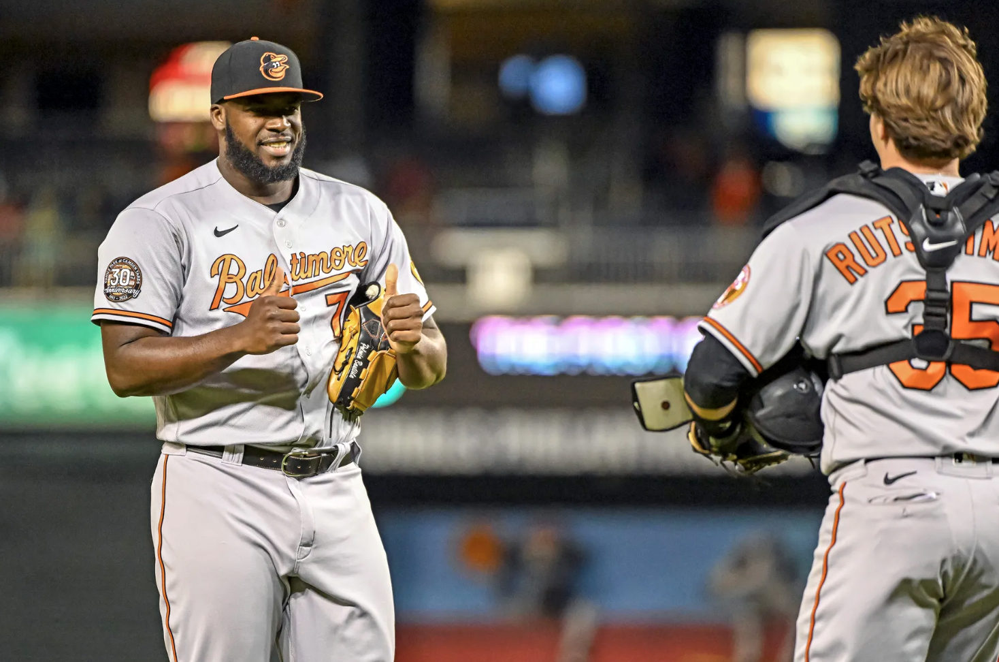

The 1931 Philadelphia Phillies were not a particularly compelling baseball team. They had a record of 66-88-1 in the franchise’s last of 14 straight losing seasons. Their leader in innings pitched, James Elliott, was nicknamed Jumbo.
Thanks to their predecessors, that team holds a major league record. The 1930 Phillies posted a collective 6.70 ERA, the worst in American and National League history, and the next year’s club improved on that mark by 2.12 in its mediocre campaign. Since earned runs became an official stat in 1913, no team has improved its ERA from one year to the next by more, according to the Elias Sports Bureau.
The 2022 Orioles rank second on that list. Through a combination of key acquisitions, improved game-planning and players’ applications of the team’s resources, Baltimore has built the majors’ most improved pitching staff of the past nine decades.
In the two full seasons before this one, the Orioles had their two worst team ERAs since arriving in Baltimore in 1954. But a pitching staff largely composed of second-chancers has unexpectedly steered them into the wild-card race, entering this weekend’s series with the Toronto Blue Jays with an ERA of 3.88 that’s nearly two full runs better than last year’s franchise-worst figure.
“We’ve had a couple of really difficult pitching years,” manager Brandon Hyde said, “and we’re making big strides.”
Executive vice president and general manager Mike Elias first sensed the possibility of improvement on opening day. In overseeing the Orioles’ rebuild after taking over the club’s baseball operations department before the 2019 season, Elias has supplied Hyde with inexperienced pitching staffs, typically featuring players cast aside by other organizations and often leading to disastrous results. This year, it appeared, would be more the same.
On the cusp of the regular season, Elias traded away Cole Sulser and Tanner Scott, two of Hyde’s high-leverage relievers from the 2021 season. Baltimore’s opening day bullpen featured four pitchers who joined the team as waiver claims and another who was cut as a teenager amid a decade-long minor league career.
But sitting behind home plate at Tampa Bay’s Tropicana Field in April, Elias watched the energy and stuff Bryan Baker and Cionel Pérez, two of those waiver claims, displayed on the mound. Even in what became a season-opening sweep at the hands of a Rays team they’re now chasing for a playoff berth, they and the other pitchers Hyde sent to the mound showed Elias that change could be coming.
“Just sitting back there, you could see the talent,” he said. “It looked different.”
Making this turnaround all the more impressive is that the pitcher who started that first game, team ace John Means, made only one more appearance before undergoing season-ending Tommy John elbow reconstruction surgery. Expected to be a midseason addition, Grayson Rodriguez, the sport’s top pitching prospect, suffered a Grade 2 right lat muscle strain on the verge of a major league promotion in June.
The Orioles have made do in their absences.
“It’s not the pitching staff you used to play with them,” Boston Red Sox manager Alex Cora said. “Fastballs in different places, angles. Their secondary stuff, it’s elite. … ‘18,’ 19 you play them, you can get to them in the last third of the game. Now, they have the lead, and the game is almost over. It’s a testament to who they are.”
The core of the Orioles’ pitching staff is not without pedigree. Right-handers Dean Kremer, Kyle Bradish and Dillon Tate were significant parts of trade returns. Left-hander Keegan Akin was a second-round draft pick. Right-hander Jordan Lyles is in his 12th major league season, having signed the largest free-agent deal Elias has given out in Baltimore.
But the group is largely castoffs. Tyler Wells, second behind Lyles in innings, was left available as a prospect to all 29 other teams by the Minnesota Twins and passed over by each until Baltimore took him in the second round of the 2020 Rule 5 draft. Baker, Pérez, Joey Krehbiel and Austin Voth were acquired via waivers in the past year, with their previous organizations dropping each off their respective 40-man rosters; Pérez said the group often marvels at how they all reached Baltimore the same way. All-Star closer Jorge López also arrived on waivers back in 2020, thriving after moving to a relief role before the Orioles traded him to Minnesota in early August. Part of the reason they did so was their comfort in Félix Bautista’s ability to handle the role. Released by the Miami Marlins as a 19-year-old, Bautista went 10 years between when he first signed and this breakout season.
Those seven pitchers have combined for a 2.76 ERA this year with Baltimore.
“It’s cool to see all these guys that kind of have been tossed aside a little bit, and they’ve got talent, and then just seeing this organization come and pluck them away and utilize their best strengths,” Voth said. “They’re pretty good at that.”
Voth is only one example of the Orioles showing off a knack to maximize pitchers’ abilities. He’s made some slight mechanical tweaks, starting his motion more closed off and facing farther toward third base, then driving into the ground on his hind leg as he pitches. The club has also emphasized, as they do with each pitcher, that Voth do what he does best. In his case, that’s throwing his hoppy fastball high in the strike zone and tunneling his curveball off that, making better use of his best secondary pitch. After posting a 10.13 ERA for the MLB-worst Washington Nationals before being designated for assignment, Voth has a 2.78 mark with Baltimore.
At the time he was let go, Voth had the fifth-worst ERA of any pitcher who had thrown at least 100 innings over the previous three seasons. He said the Nationals were more hands-off in their work with him, adding “their analytics department is not as advanced as the Orioles’,” a sign of Baltimore’s progress under Elias and assistant general manager for analytics Sig Mejdal.
Both came from the Houston Astros, one of the sport’s premier pitching development organizations, and Elias felt adding someone in Baltimore familiar with Mejdal’s models, and thus able to discern that information to players, would be “would be a big shot in the arm.” Chris Holt, then Houston’s assistant pitching coordinator, was drawing interest from another club, and knowing he was about to lose Holt anyway, then-Astros general manager Jeff Luhnow gave Elias permission to interview him.
Holt became Baltimore’s minor league pitching coordinator, overseeing a program that had immediate improvement in strikeouts and ERA in 2019. His title changed to director of pitching ahead of the 2020 campaign, which he was supposed to divide working between the majors and minors before the latter’s season was canceled amid the coronavirus pandemic. He retained that position as he also became the Orioles’ major league pitching coach in 2021, when the team posted a 5.84 ERA that was the worst in the majors and team history before this year’s massive step forward. In addition to the drop in ERA, the Orioles have slimmed their walk and home run rates while seeing increases in strikeouts.
The staff has also seen an uptick in velocity, especially in the bullpen. Orioles relievers have an average four-seam fastball velocity of 95.1 mph, seventh in the majors according to Baseball Savant. A year ago, they ranked 23rd at 93.5 mph. No bullpen has thrown four-seamers 98 mph or faster at a greater frequency, doing so at a rate nine times higher than in 2021. Bautista has thrown 179 pitches at least 100 mph; since pitch tracking began in 2008, all other Orioles have combined for 32 such offerings.
“Nobody is scared,” Tate said. “Everybody is ready to challenge anybody that is right in front of them.
“I think guys feel like they have something to prove.”
That lack of fear was echoed among the staff. Early in the year, Orioles catchers set up in the middle of the plate to encourage pitchers to throw strikes. The practice is no longer necessary.
“Now,” backup catcher Robinson Chirinos said, “they believe.”
Holt said he found no value in comparing this team to previous ones, but he continually praised this group’s work ethic, which he said has allowed them to take what they hear from him, their backstops, bullpen catchers and other members of the pitching department and translate it into on-field results.
“If you look at every guy that’s currently on this roster, every guy has taken a step forward in some respect this year,” Holt said. “Certainly, we have excellent resources, but those resources are nothing without the work ethic and the focus level and the determination level of the player. It’s a special thing. This is a special group.”
Akin is a visual learner. For him to truly understand how his pitches play against opposing hitters, he believes there’s only one way: step in the box against himself.
“That’s, like, the one thing that’s almost impossible in this game,” Akin said. “The person that has that stuff doesn’t know how intimidating it can be.”
The Orioles, though, have found their workarounds. After Akin was drafted in 2016, the organization used TrackMan and other systems that could provide information on his pitches, “but we didn’t have anybody that could break it down and basically translate it to the players and make it dummy proof,” Akin said. “And now we have that.”
Before each series, Ryan Klimek, in his first year formally as Baltimore’s manager of pitching strategy, an evolution of his role as an advance scout, will go over an attack plan for the opposing team with the pitchers. He’ll use data from the team’s analytics department to detail hitters’ weaknesses and how the strength of various Orioles might match up with those. He “runs the show,” Bradish said, for pregame meetings with the starting pitcher, catcher, Holt and assistant pitching coach Darren Holmes on the plan for that night’s lineup.
"Now, they believe."
- Robinson Chirinos
Pitchers go into each outing with an idea of what type of pitch and which location will give them the best chance of success in a given count against a particular batter.
Elias said Klimek’s new role is a byproduct of wanting to ensure Holt and Holmes can devote their focus to the pitchers’ development, with Holt an expert in pitch design and mechanics while Holmes’ time as a major leaguer gives players a relatable resource on top of his background in biomechanics.
Klimek has also been in the dugout during games, with Lyles and Chirinos among those suggesting he be there to go over plans for the upcoming inning with the catcher and starting pitcher while the Orioles are batting. It becomes especially beneficial as a starter works through the lineup a second or third time, with Klimek providing a refresher on what a batter saw in his previous plate appearance and suggesting a sequence for the upcoming matchup. The Orioles declined to make Klimek available for an interview.
“It takes a little bit more thinking out of it for the rest of us,” said Akin, who has found a home as a long reliever. “You go out there and just kind of execute and not have to think, ‘OK, well, I threw him a fastball two innings ago with the first pitch.’”
The Orioles’ pitchers have more information than they ever have. The team has managed to avoid overwhelming them with it.
“The most important thing that they’ve done is have every guy that goes out there with a clear mind,” Kremer said. “There’s no mixed messages. There’s no unnecessary clutter in your head that will allow you to not focus on the task at hand when you’re out there.”
Klimek’s work emphasizes the Orioles’ focus on individualization, detailing which specific player might be best suited to come in to face a certain batter. In past years, Hyde couldn’t necessarily navigate a lineup in that fashion, simply trying to get through nine innings however he could with a worn-down staff. He went into games with only a handful of available relievers, needing to extend each after a brief outing from the starter, then repeat the cycle the next game.
“We never would be able to catch up,” Hyde said.
This year, pitchers’ effectiveness has allowed him to deploy them in more advantageous situations. Jake Reed, the latest waiver claim to enter the Orioles’ clubhouse, has had far more success in his career in right-on-right matchups and said he was grateful that’s how Hyde has used him early in his tenure with the team. He said it’s communicated a message that he doesn’t have to be anything other than himself.
“This organization does a really good job of helping guys find their avenue of success,” Baker said. “It’s a beautiful thing about the game. There’s a lot of different ways to be successful, and I think obviously with the mix of guys that we have, you can tell that guys are good at different stuff. I think the Orioles do a really good job of finding out what that is and really honing in on that.”
There remains progress to be made. The Orioles’ improvement in ERA still leaves them in the middle of the league for the year.
But the steps forward taken this season give hope for more. Wells, Kremer and Bradish, each starting down the stretch of a major league season for the first time, have grown in handling that role. Pérez has become a late-inning relief weapon after struggling to find the strike zone in stops with Houston and Cincinnati, with Bautista, Krehbiel and Baker also getting experience late in major league games. Even Lyles, asked to be a veteran clubhouse presence and innings eater, has improved in how he navigates a lineup.
“You go one step at a time,” Holt said. “You can’t ever look too far ahead in the future. Right now, we’re working to do the best possible work we can one day at a time and do the next right thing with each guy. You can’t stampede into steps that are ahead.”
Still, it’s exciting to think of what could come. Next season should see Means’ return and Rodriguez’s full-on arrival. DL Hall, the organization’s top pitching prospect behind Rodriguez, could join the rotation, too, after this year’s late-season relief stint. Of the pitchers on Baltimore’s active roster, only Lyles, with a team option in his contract, isn’t guaranteed to return next season. Bautista described the group as a family, saying that support and bond have helped them thrive.
“That little curve of guys getting familiar with you and the league catching up to you just hasn’t really been there with these guys,” Lyles said. “I think the sky’s the limit for them, and I don’t see them stopping here shortly.”
With Elias previously saying payroll will increase this offseason, there will be new faces, as well, either from trades or free agency. The changes to Camden Yards’ left field wall, now deeper and taller, have certainly helped this year’s staff, and it could encourage pitchers to come to Baltimore, as well.
This year’s improvement won’t hurt that cause, either.
“We want this to be a place where people want to come play because you know you’re gonna get better here,” Elias said. “We’re already starting to hear that a lot, so that’s really exciting for me.”